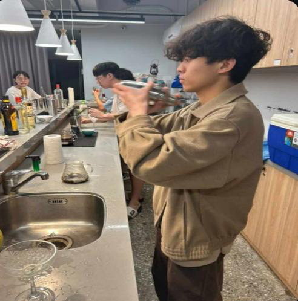
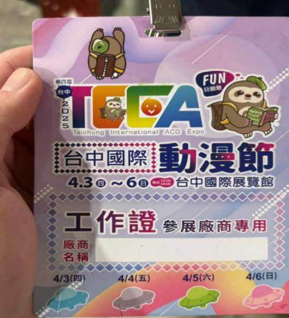
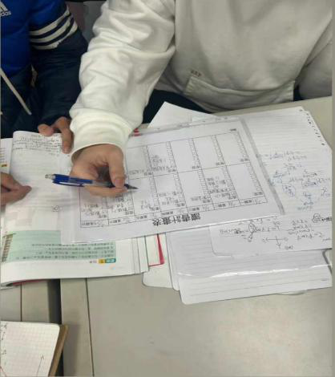

我是劉俊廷，目前就讀國立陽明交通大學機械工程學系。我的方向是熱流工程與熱管理，希望未來成為能將理論、模擬與實務整合的熱傳工程師。
能獨立理解與操作熱模擬工具，並追溯背後的熱傳理論。
把課程理論轉換成 SolidWorks 熱模型與可判讀的數據結果。
歷經轉學考與高強度課業壓力，仍持續精進專業能力。
對電子散熱、功率元件熱管理與航太熱控保持高度興趣。
我把課外經驗轉化成工程能力：精準控制、現場應變與技術溝通。

從比例、密度與流程控制中培養精度與系統思維。

在高壓現場訓練臨場反應、團隊合作與問題處理。

透過教學培養溝通、邏輯整理與知識轉譯能力。